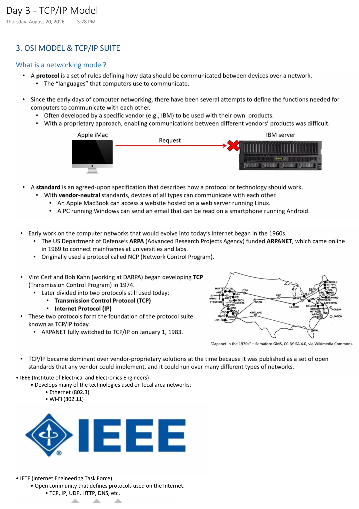
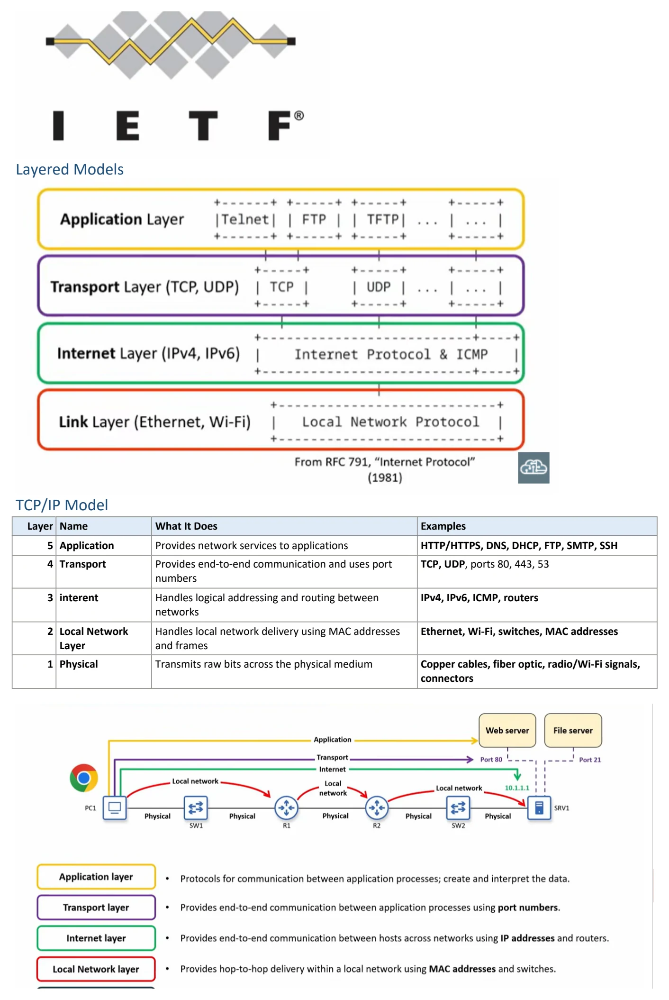
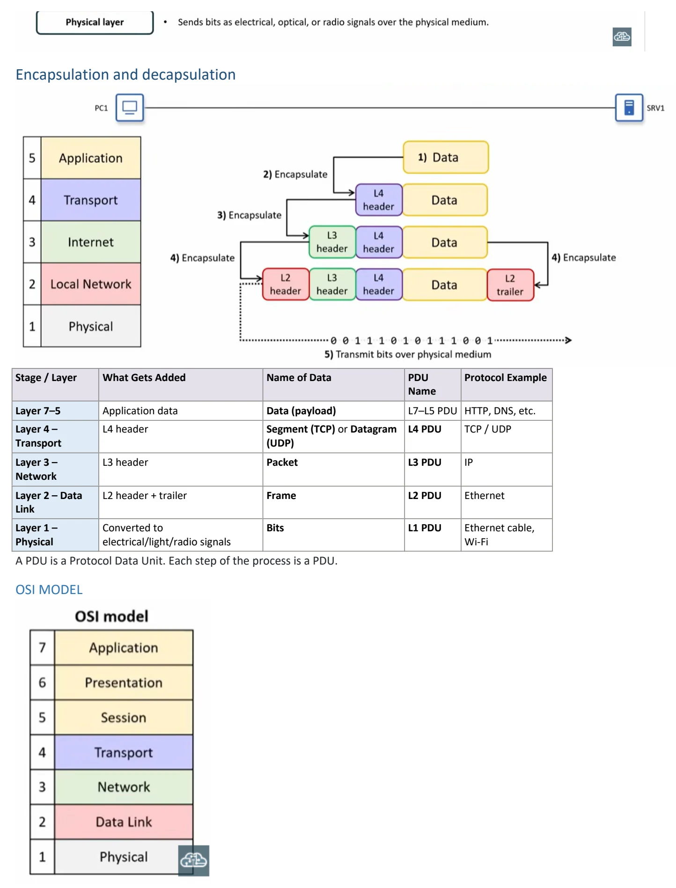

TCP/IP Model
Download original PDF


Text view — TCP/IP Model
Extracted from the original export. Diagrams and some formatting appear in the notes above.
Day 3 - TCP/IP Model Thursday, August 20, 2026 3:28 PM 3. OSI MODEL & TCP/IP SUITE What is a networking model? • IEEE (Institute of Electrical and Electronics Engineers) • Develops many of the technologies used on local area networks: • Ethernet (802.3) • Wi-Fi (802.11) • IETF (Internet Engineering Task Force) • Open community that defines protocols used on the Internet: • TCP, IP, UDP, HTTP, DNS, etc. Layered Models TCP/IP Model Layer Name What It Does Examples 5 Application Provides network services to applications HTTP/HTTPS, DNS, DHCP, FTP, SMTP, SSH 4 Transport Provides end-to-end communication and uses port TCP, UDP, ports 80, 443, 53 numbers 3 interent Handles logical addressing and routing between IPv4, IPv6, ICMP, routers networks 2 Local Network Handles local network delivery using MAC addresses Ethernet, Wi-Fi, switches, MAC addresses Layer and frames 1 Physical Transmits raw bits across the physical medium Copper cables, fiber optic, radio/Wi-Fi signals, connectors Encapsulation and decapsulation Stage / Layer What Gets Added Name of Data PDU Protocol Example Name Layer 7–5 Application data Data (payload) L7–L5 PDU HTTP, DNS, etc. Layer 4 – L4 header Segment (TCP) or Datagram L4 PDU TCP / UDP Transport (UDP) Layer 3 – L3 header Packet L3 PDU IP Network Layer 2 – Data L2 header + trailer Frame L2 PDU Ethernet Link Layer 1 – Converted to Bits L1 PDU Ethernet cable, Physical electrical/light/radio signals Wi-Fi A PDU is a Protocol Data Unit. Each step of the process is a PDU. OSI MODEL Day 3 - TCP/IP Model Thursday, August 20, 2026 3:28 PM 3. OSI MODEL & TCP/IP SUITE What is a networking model? • IEEE (Institute of Electrical and Electronics Engineers) • Develops many of the technologies used on local area networks: • Ethernet (802.3) • Wi-Fi (802.11) • IETF (Internet Engineering Task Force) • Open community that defines protocols used on the Internet: • TCP, IP, UDP, HTTP, DNS, etc. Layered Models TCP/IP Model Layer Name What It Does Examples 5 Application Provides network services to applications HTTP/HTTPS, DNS, DHCP, FTP, SMTP, SSH 4 Transport Provides end-to-end communication and uses port TCP, UDP, ports 80, 443, 53 numbers 3 interent Handles logical addressing and routing between IPv4, IPv6, ICMP, routers networks 2 Local Network Handles local network delivery using MAC addresses Ethernet, Wi-Fi, switches, MAC addresses Layer and frames 1 Physical Transmits raw bits across the physical medium Copper cables, fiber optic, radio/Wi-Fi signals, connectors Encapsulation and decapsulation Stage / Layer What Gets Added Name of Data PDU Protocol Example Name Layer 7–5 Application data Data (payload) L7–L5 PDU HTTP, DNS, etc. Layer 4 – L4 header Segment (TCP) or Datagram L4 PDU TCP / UDP Transport (UDP) Layer 3 – L3 header Packet L3 PDU IP Network Layer 2 – Data L2 header + trailer Frame L2 PDU Ethernet Link Layer 1 – Converted to Bits L1 PDU Ethernet cable, Physical electrical/light/radio signals Wi-Fi A PDU is a Protocol Data Unit. Each step of the process is a PDU. OSI MODEL Day 3 - TCP/IP Model Thursday, August 20, 2026 3:28 PM 3. OSI MODEL & TCP/IP SUITE What is a networking model? • IEEE (Institute of Electrical and Electronics Engineers) • Develops many of the technologies used on local area networks: • Ethernet (802.3) • Wi-Fi (802.11) • IETF (Internet Engineering Task Force) • Open community that defines protocols used on the Internet: • TCP, IP, UDP, HTTP, DNS, etc. Layered Models TCP/IP Model Layer Name What It Does Examples 5 Application Provides network services to applications HTTP/HTTPS, DNS, DHCP, FTP, SMTP, SSH 4 Transport Provides end-to-end communication and uses port TCP, UDP, ports 80, 443, 53 numbers 3 interent Handles logical addressing and routing between IPv4, IPv6, ICMP, routers networks 2 Local Network Handles local network delivery using MAC addresses Ethernet, Wi-Fi, switches, MAC addresses Layer and frames 1 Physical Transmits raw bits across the physical medium Copper cables, fiber optic, radio/Wi-Fi signals, connectors Encapsulation and decapsulation Stage / Layer What Gets Added Name of Data PDU Protocol Example Name Layer 7–5 Application data Data (payload) L7–L5 PDU HTTP, DNS, etc. Layer 4 – L4 header Segment (TCP) or Datagram L4 PDU TCP / UDP Transport (UDP) Layer 3 – L3 header Packet L3 PDU IP Network Layer 2 – Data L2 header + trailer Frame L2 PDU Ethernet Link Layer 1 – Converted to Bits L1 PDU Ethernet cable, Physical electrical/light/radio signals Wi-Fi A PDU is a Protocol Data Unit. Each step of the process is a PDU. OSI MODEL